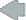

Course Registration System (CRS)
Welcome to the Course Registration System home page. This page is intended to be a message board for project members and other stakeholders for this project.
Topics
| Project Calendar | Project News |
Upcoming Reviews |
|
Project Calendar 
|
 |
Previous |
Week 22 (May 23 - May 29, 1999) |
Next |
| Mon 24 | Tue 25 | Wed 26 | Thu 27 | Fri 28 |
| 10:00 - 13:30 (Gabriola) External Review of Acc. Test Results |
09:00 - 10:30 (Gabriola) Review of User's Guide 0.9 |
All day event: Install Release 1.0 on Wylie College LAN |
||
| 12:30 - 16:00 (Pender) Planning it. C3 |
12:00 - 16:00 (Gabriola) CRS Team Meeting |
|||
| 15:00 => (Checker's) Week end social event |
Project
News
| Title | Submitted by | Submission date | Expires |
| CRS Project Web Site Launched | Simon Jones | 04/02/99 | 06/02/99 |
| CRS and process improvement | Simon Jones | 05/12/99 | 07/31/99 |
| CRS will evaluate test automation | Rick Bell | 05/19/99 | 07/31/99 |
| News archive |
Upcoming Reviews
The following list shows the schedule for the planned reviews for the next four weeks.
| Review | When | Where | Host |
| Review of Acceptance Test Results Release 1.0 | May 24, -99 | WC/Gabriola | Kerry Stone |
| User's Guide Review | May 25, -99 | WC/Gabriola | Carol Ming |
| Review of Test Plan for Release 2.0 | June 10, -99 | WC/Pender | Kerry Stone |
| Design Review (Release 2.0) | June 15, -99 | WC/Gabriola | Steve Johnson |